ТОП 15 МІСЦЬ ЗАКАРПАТТЯ, ЯКІ ВАРТО ВІДВІДАТИ
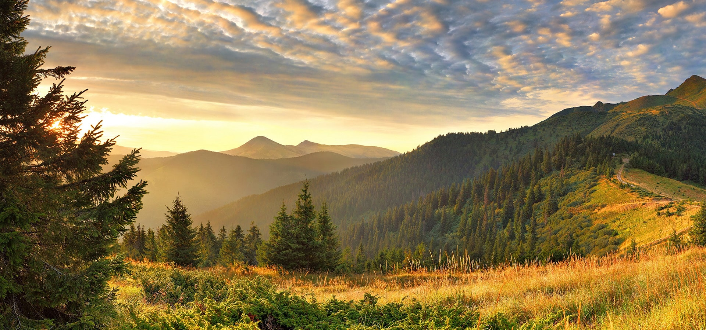
Цікавитесь пам'ятками Закарпаття? Поєднати подорож по Закарпаттю можна з відпочинком та оздоровленням на унікальному бальнеологічному курорті Поляна. Тут ви знайдете комфортне розміщення, відмінний сервіс, якісне медичне обслуговування.
Дістатися до Поляни не складно. Вибирайте дати та зручний для вас вид транспорту. Квитки на автобус або поїзд можна придбати у нас на сайті без переплат.
1. ВОДОСПАД ШИПІТ
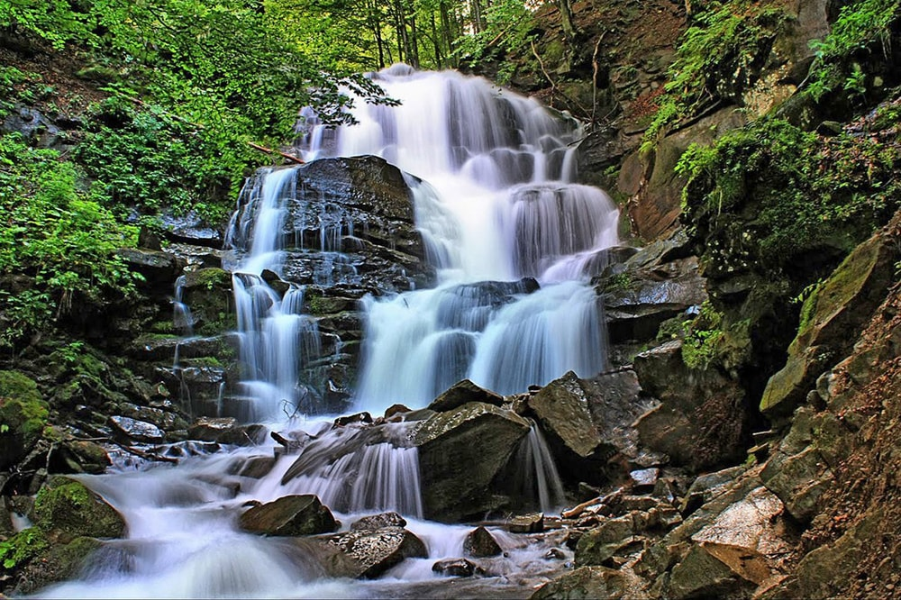
В самому серці Карпат в підніжжі гори Гимба в буковій ущелині знаходиться одне з семи природних чудес України – неймовірно гарний каскадний водоспад Шипіт.
Свій початок це диво природи бере на високих схилах гори Великий Верх (1598 м). Струмені кришталево прозорої води невеличкого гірського джерельця Площанка, спадаючи каскадами з висоти 14 метрів, розбиваються об каміння та, виблискуючи в сонячному промінні, розсипаються навколо сотнями тисяч мерехтливих яскравих коштовностей.
Водоспад Шипіт користується великою популярністю серед туристів, адже милуватися ним можна в будь-яку пору: взимку він повністю не замерзає, навесні його бурхливі потоки підсилюються талими водами, а влітку та восени, коли навколишні схили гір вкриті кольоровим різнобарв’ям, тут можна робити неперевершені фото.
2. ЦЕРКВА XVIIІ СТ. В СЕЛІ ПИЛИПЕЦЬ (ЗАКАРПАТТЯ)
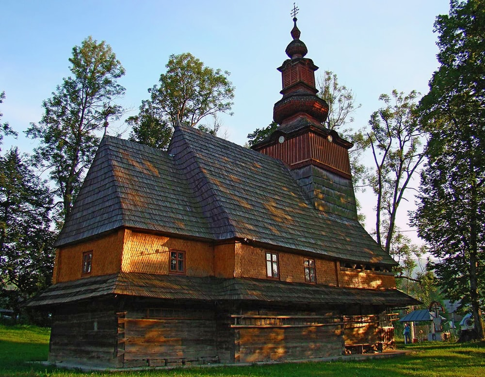
Закарпаття славиться не лише природними дивами, а й рукотворними пам’ятками. Однією з таких яскравих та особливих туристичних атракцій можна назвати старовинну дерев’яну церкву Різдва Пресвятої Богородиці. Цей один із кращих зразків барокового стилю дерев'яної церковної архітектури знаходиться у високогірному селі Пилипець на березі річки Репінка. Точна дата возведення церкви невідома. Припускають, що ймовірно це відбулось з 1759 по 1762 рр. А ось дата реконструкції відома достеменно: про це свідчить табличка з написом“1841” на південній стіні. Особливість розкішної церкви Різдва Пресвятої Богородиці полягає в тому, що її було побудовано без єдиного цвяха. Щодо матеріалу, з якого зроблена будівля, історики сперечаються досі. За однією версією це були смереки, за іншою - ялинові бруси.
Сама споруда церкви невелика, але вона є винятковим зразком верховинської архітектури Карпат XVIII століття. Церква декорована оригінальними орнаментами та витонченою різьбою. Потрапити в середину храму можна лише на недільну службу. Особливу увагу в середині церкви привертає чотириярусний іконостас традиційної форми кінця XVIII століття. З південно-східного боку церкви розташована 2-ярусна дзвіниця у верховинському стилі з трьома дзвонами, відлитими ще 1924 року в ливарні Ференца Егрі.
3. ОЗЕРО СИНЕВИР
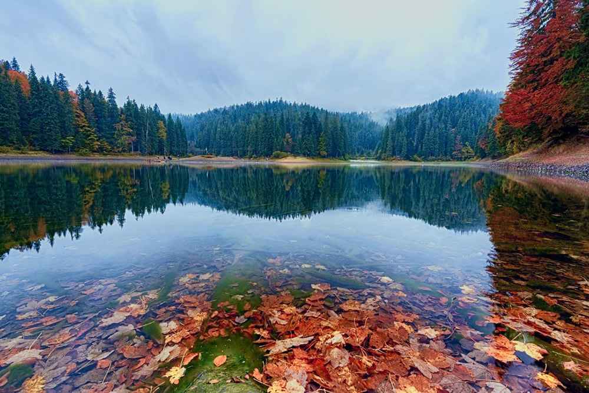
Район Національного природного парку «Синевир» - це казковий куточок прекрасної природи. Це місце сили і найзагадковіша визначна пам'ятка Західної України. Саме тут, захована в густих хвойних лісах Карпат, знаходиться справжня природна перлина і одна з візитівок смарагдових Карпат – озеро Синевир, яке вражає своїми кришталево чистими і глибокими водами. Щороку тисячі туристів приїжджають сюди помилуватись найбільшим гірським озером в Україні та насолодитись чудовими мальовничими краєвидами навколо.
Завдяки високогірному положенню та порівняній глибоководності Синевиру, вода в озері навіть найспекотнішим літом прогрівається лише на пару метрів. Посередині озерних вод, немов справжня зіниця, влаштувався маленький острів, і, якщо дивитись на Синевир згори, здається, що і озеро дивиться на тебе своїм єдиним блакитним оком. Звідси і пішла його друга назва – Морське Око Карпат.
4. СЕЛО ДЕСЯТИ МУЗЕЇВ КОЛОЧАВА
Неподалік від Синевиру знаходиться ще одна туристична родзинка Закарпаття. Мальовнича Колочава - одне з найдовших сіл в Україні, його довжина складає 15 км. Але знаменита Колочава не лише через це. Карпатська глибинка може похвалитися мінеральними джерелами, неймовірними краєвидами на гори та давньою історією, адже перша письмова згадка про нього датується 1463 р.
Про багате минуле села можна дізнатися більше, відвідавши один з десяти (!) музеїв села: музей архітектури та побуту «Старе село», «Колочавську вузькоколійку», «Колочавський бокораш», «Радянську школу», «Чеську школу», історико - військові музеї: «Лінія Арпада», «Воїнам –інтернаціоналістам» та «Бункер Штаєра», «Церкву Святого Духа» (архітектурна пам’ятка кінця ХVIII ст. в стилі бароко) та етно-музей Івана Ольбрахта. Під час відвідування Колочави туристи гарантовано отримають естетичне задоволення та зроблять багато відкриттів.
5. МИСЛИВСЬКИЙ ЗАМОК ГРАФА ШЕНБОРНА
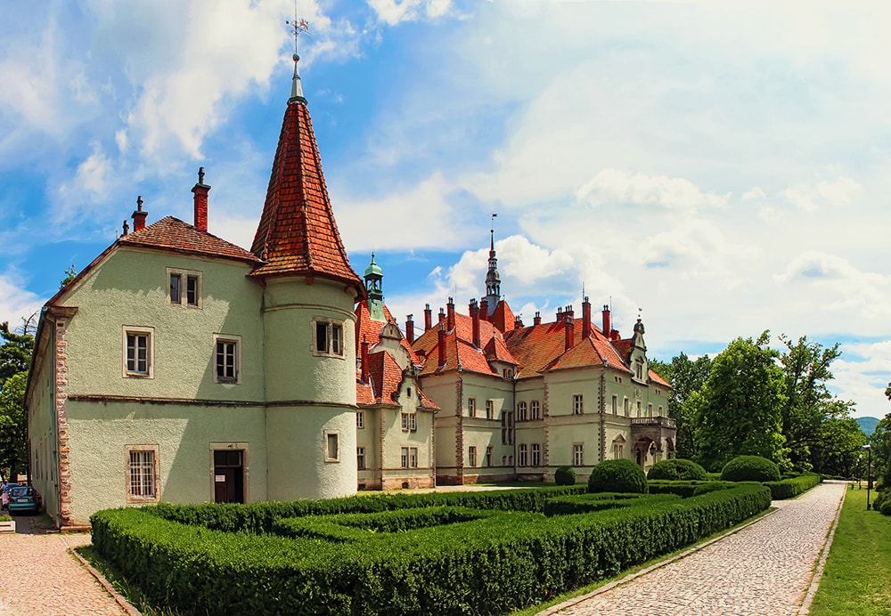
Серед дивовижних архітектурних пам’яток Західної України можна виділити казковий мисливський замок Шенборн. Він зберігся майже в первісному вигляді як всередині, так і зовні. Особливу увагу слід приділити своєрідній архітектурі замку. Відповідно до астрономічних принципів, кожен з елементів фасаду має особливу символічну інтерпретацію. Таким чином, замок має рівно 365 вікон, які представляють дні року (на випадок високосного року в палаці Шенборн є ще одне замуроване вікно), 52 кімнати, які символізують кількість тижнів на рік, та 12 входів на кожен місяць року.
Оточує замок Шенборнів чудовий англійський парк площею 19 гектарів, в якому можна знайти самшит, катальпу, канадські ялини, японські вишні, рожевий бук та багато інших цікавих рослин. Ще одна родзинка парку – ставок, який своїми контурами в точності повторює територію тодішньої Австро-Угорської імперії.
6. ЧИНАДІЇВСЬКИЙ ЗАМОК СЕНТ-МІКЛОШ
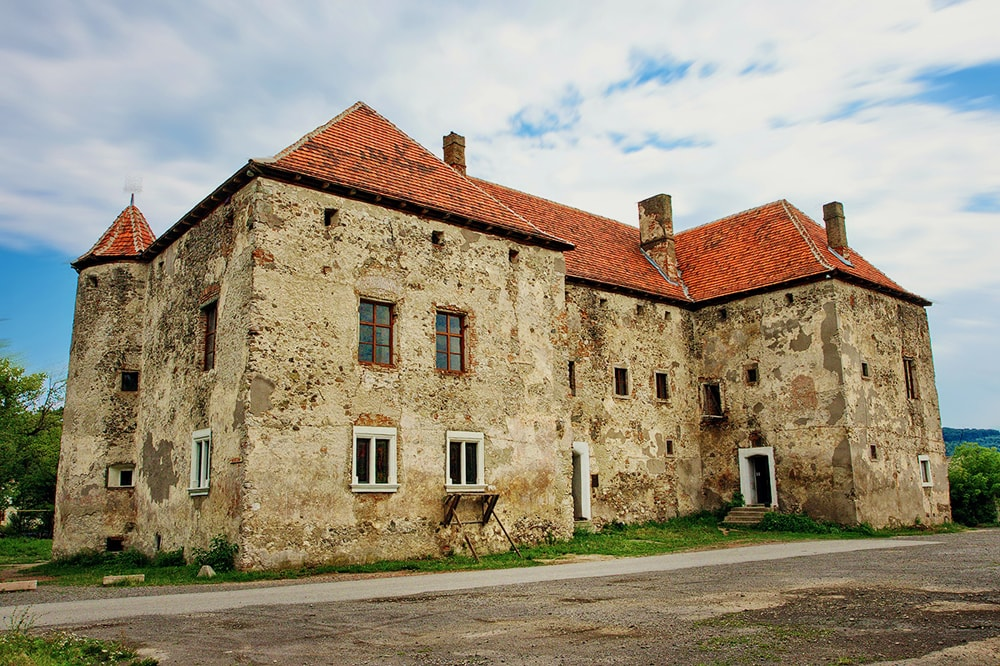
Побудований в 15 сторіччі як фортеця, замок Сент-Міклош за часи свого існування змінив багато господарів та був свідком різних історичних подій – героїчних, трагічних, драматичних і романтичних. Він знав часи розквіту та пережив період занепаду.
З 19 століття, після того як протягом двохсот років замком володіли графи Шенборни, Чинадіївським замком ніхто не опікувався, його використовували за різними призначеннями без належного догляду, і він потроху упадав та руйнувався.
У 2001 році родина закарпатських художників Єжи Бартоша та Тетяни Петричко-Бартош вирішила врятувати історичну пам’ятку та взяли замок в оренду. Їм вдалось відродити унікальний історичний пам’ятник культури та архітектури та привернути до нього увагу туристів. Єжи Бартош сам проводить захоплюючі екскурсії замком Сент-Міклош, під час яких туристи дізнаються про історію замку і життя його колишніх власників, проходять потаємними ходами в стінах фортеці метрової товщини та мають змогу посидіти на князівському троні. А ще тут влаштовують весільні церемонії та проводять пишні шлюбні обряди, бо вірять, що це культове місце буде запорукою довгого щасливого життя для молодого подружжя.
7. ОЛЕНЯЧА ФЕРМА
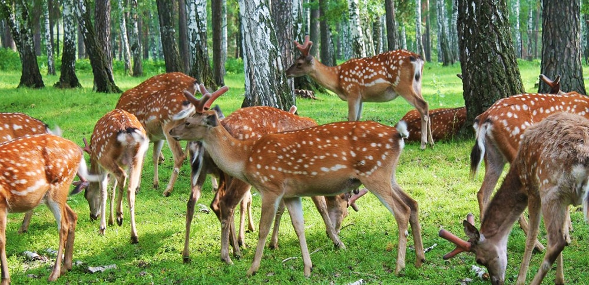
Ще одна надзвичайно приваблива та дуже мила туристична атракція Закарпаття розмістилась поміж селами Іза та Липча поблизу містечка Хуст. Це єдине в Україні фермерське господарство, яке утримує плямистих оленів. Заснували його більше 30 років тому. Зараз у фермерському хазяйстві налічують понад 300 цих рогатих красенів, які живуть в природному середовищі на 57 гектарах пасовищ, лісів і штучних ставків.
Щодня чимало туристів відвідують ферму, аби помилуватись цими дивними створіннями. Відвідувачі можуть не тільки подивитись на прекрасних тварин, а й погладити їх, погодувати, обійняти та зробити чудові фото на згадку. Особливий захват це викликає у малечі. Не варто переживати, що олені можуть завдати якоїсь шкоди гостям – до спілкування з туристами відбирають найспокійніших тварин, звичних до уваги.
8.МУКАЧІВСЬКИЙ ЗАМОК ПАЛАНОК
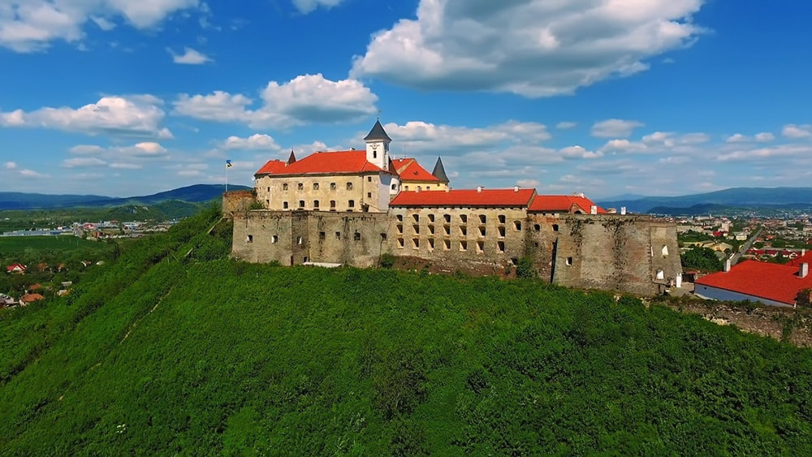
Мукачівський замок Паланок є історичною і воєнно-архітектурною пам’яткою і одним з кращих замків Центральної Європи. Він височіє на Замковій горі вулканічного походження висотою 68 метрів на околиці міста Мукачево. Свою назву «Паланок» замок взяв від дубового частоколу – паланка, яким колись була оточена Замкова гора.
Хоча немає точної дати побудови фортеці, перші згадки про неї відносяться до 11 століття за часів Київської Русі. Сама споруда була побудована в кращих традиціях середньовічної оборонної архітектури і складається з 4 рівнів, на яких розміщується три замки: Нижній, Середній та Верхній або Старий замок (Акрополь). За всю свою історію замок “Паланок” змінив десятки власників і правителів, пережив багато битв і війн, і навіть майже 100 років слугував в’язницею, в якій тримали понад 8000 в’язнів.
На сьогоднішній день відновлений замок є найвищою точкою міста Мукачево і обов'язковим місцем для відвідування всіх туристів. На території колишньої фортеці розміщуються історичний та краєзнавчий музеї, діють виставки живопису та різьблення.
9. ЦЕНТР ЛОЗОПЛЕТІННЯ В С. ІЗА
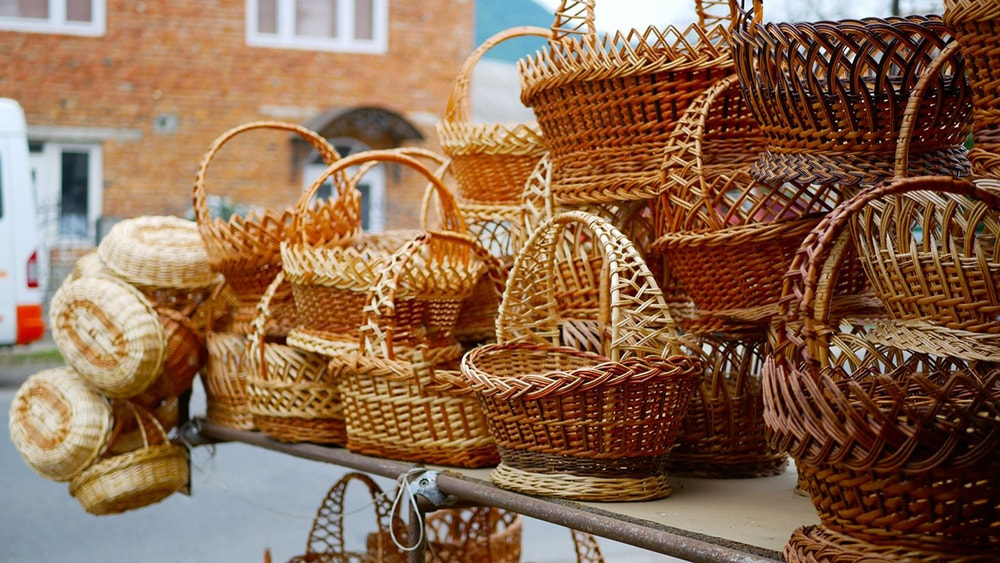
Село Іза Хустського району відоме далеко за межами Закарпатської області. І все завдяки ремеслу лозоплетіння, яке місцеві жителі вдосконалили і довели до рівня мистецтва.
З давніх давен жителі Ізи займались землеробством, рибальством та полюванням. В кінці 19 століття селянин І. Кошко вивчився плести кошики та навчив цьому своїх дітей. Згодом ще кілька селян опанували це ремесло. Нині практично всі місцеві жителі з дитинства навчаються плетінню виробів з лози. Діти готують лозу, яку дорослі потім обчищають, фарбують та виплітають з неї свої шедеври: кошики, шкатулочки, столи, стільці, крісла-качалки, етажерки, іграшки та різноманітні сувеніри.
Народні умільці з села Іза можуть зробити з лози майже все!
10. СЕЛИСЬКА СИРОВАРНЯ В КАРПАТАХ
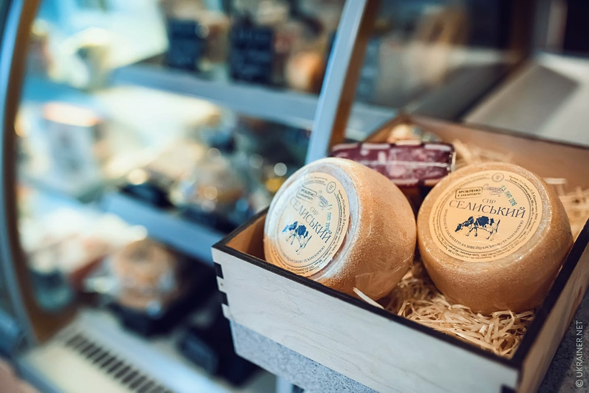
Ще одне знане на всю Україну село з Хустського району - це Нижнє Селище. Відоме воно своїми справжніми натуральними сирами, які з 2002 року виготовляються за швейцарською технологією в місцевій сироварні, аналогів якій в Україні немає. В процесі виробництва не використовують консерванти, шкідливі домішки, ароматизатори та барвники. Лише справжнє молоко, яке закуповують у місцевих селян.
Для туристів на сироварні влаштовують екскурсії, під час яких можна на власні очі побачити як молоко перетворюється на сир та скуштувати кілька видів сиру: «Хуст», «Селиський молодий», «Селиський зрілий» і «Нарцис Карпат». До речі, приготування натурального сиру – тривалий процес. Наприклад, закарпатський сир “Нарцис Карпат” дозріває півроку у вологому і прохолодному підвалі Селиської сироварні.
11. СТРАУСИНА ФЕРМА В КАРПАТАХ
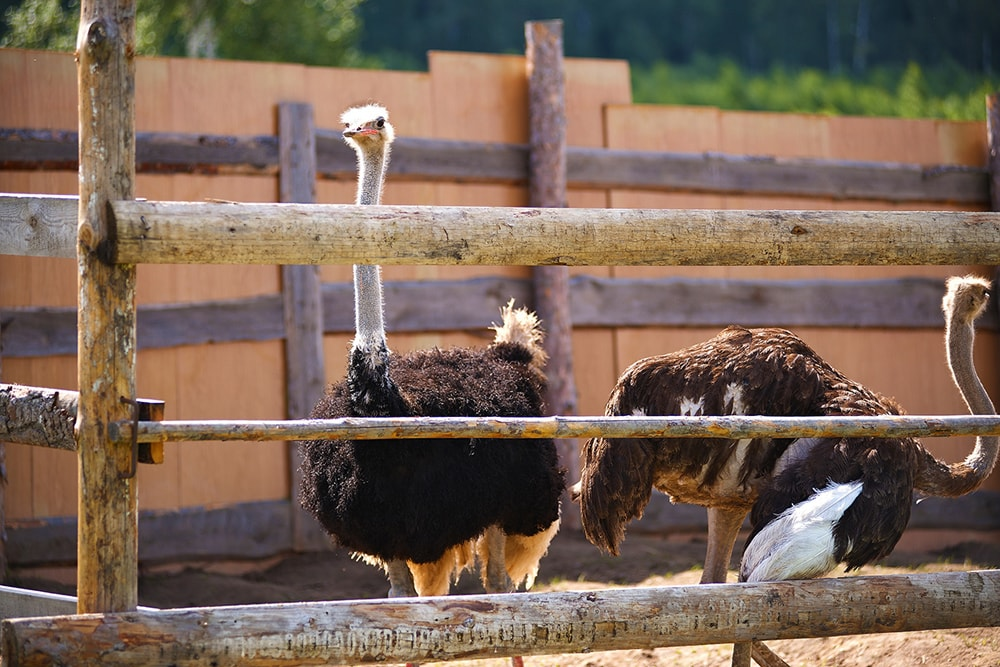
Страусині ферми є в багатьох куточках України. На них не тільки розводять цих екзотичних птахів, а й влаштовують екскурсії для туристів. В закарпатському містечку Хуст також є страусовий розплідник, який налічує понад 30 птахів.
Туристам можна принести з собою хліб, капусту та яблука, аби погодувати страусів. На території ферми можна придбати страусині яйця та пір’я, а також можна зробити досхочу гарних фото на згадку. Найбільшою популярністю користуються фото зі страусиним яйцем в руках або стоячи на ньому.
Радимо допомогти малечі тримати цей аксесуар для фото – важить таке яйце від 1 до 2 кг. На фермі ще живуть поні та 2 кізоньки, які теж полюбляють позувати для фото за невеличкий смаколик.
12. ДОЛИНА НАРЦИСІВ У КАРПАТАХ
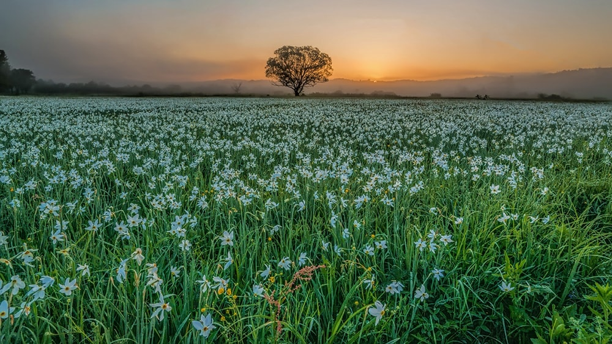
Місто Хуст зібрало навколо себе багато історичних та просто цікавих пам’яток. Серед них є і дійсно особливе природне диво, справжня туристична родзинка Закарпаття – Долина нарцисів в урочищі Кіреші. Ця ботанічна пам’ятка офіційно охороняється ще з часів, коли ці землі були власністю Австро-Угорщини, тепер же Долина належить Карпатському біосферному заповіднику, який зберігає цю цінну екосистему на території понад 250 га лук і боліт.
Долина нарцисів – унікальна і за розміром, і за розташуванням. Зазвичай ця тендітна квітка царює на висоті від тисячі метрів над рівнем моря. Подібні природні осередки нарцисів є в Альпах, Румунії та трохи на Балканах. Закарпатська ж Долина - це найбільша у Середній Європі популяція нарцису вузьколистого на висоті всього 180-200 метрів над рівнем моря. З 1992 року Долина нарцисів входить до міжнародної мережі біосферних заповідників ЮНЕСКО.
Кожного року в травні Долина накривається пречудовим килимом з білих нарцисів, помилуватись якими щодня приїздить понад 4000 тисячі туристів. Нарцис вузьколистий занесений до Червоної книги України, тож відвідуючи заповідник, треба зважати, що насолоджуватись квітучими краєвидами можна винятково зі спеціальних оглядових майданчиків, збирати квіти – суворо заборонено. А от зробити неперевершені фото – це беззаперечний туристичний must do.
13. СЕРЕДНЯНСЬКИЙ ЗАМОК
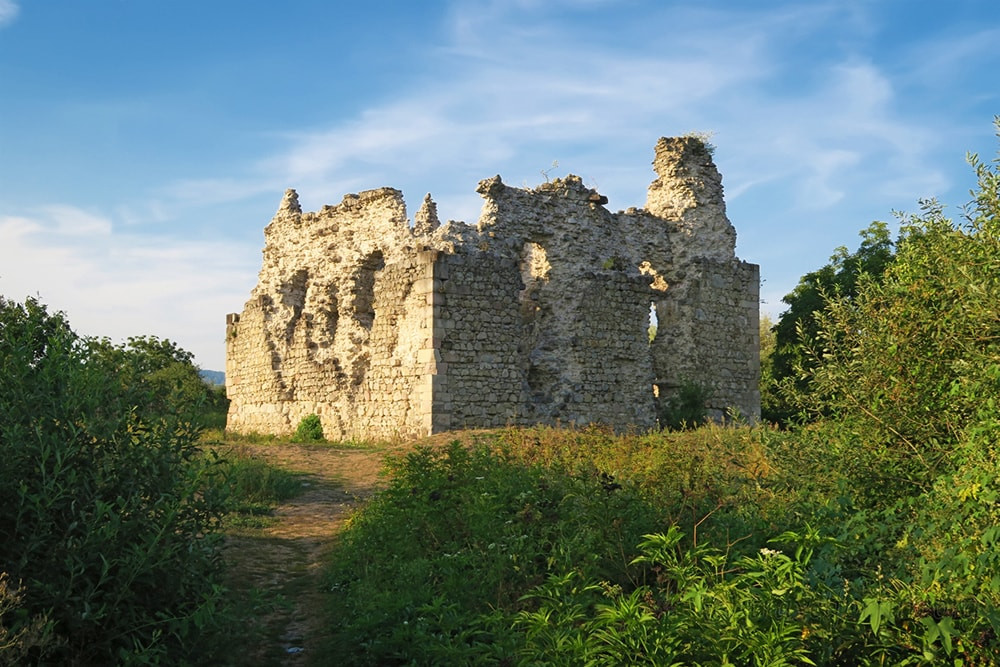
Середнянський замок - Замок ордену Тамплієрів стоїть за 20 км від Ужгорода, в селищі Середнє, від якого і пішла назва самого замку.
Коли в середні віки знаменитий чернечий орден отримав право торгувати сіллю з Солотвина, яка в ті часи була дорогоцінним крамом, тамплієри швидко побудували вздовж всього «соляного шляху», що з’єднував Прикарпаття та Європу, укріплення для розміщення митних постів. Там же знаходились невеликі військові гарнізони, які охороняли ту дорогу. Середнянський замок, а точніше його руїни, одна з таких оборонних споруд.
Він був побудований у 1146 році як дозорна башта і не призначався для довготривалого проживання. Однак, за необхідності замок міг перетворитись на потужний пункт оборони, бо мав гарну оглядову зону, зручну для ведення кругового обстрілу. Також навколо Середнянського замку була збудована система ровів та валів, яку підсилював кам’яний мур з циліндричними наріжними баштами. На теперішній час сліди цих фортифікаційних споруд майже стерті.
Попри руйнівний занепад, Середнянський замок залишається однією з основних пам’яток Закарпаття.
На початок